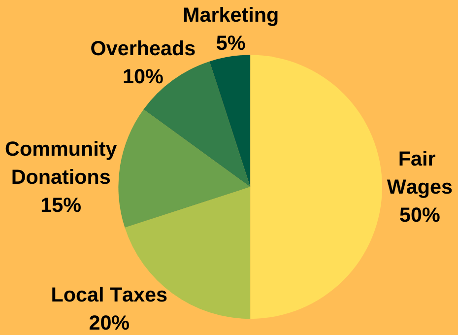

Orange Robe Tours
Authentic cultural tours that give back
One of TripAdvisor's top 2 tours in Luang Prabang
Orange Robe Tours is a profit-for-purpose social enterprise, based in Luang Prabang, Laos. We employ former Novices and Monks who have recently left the temple to lead culturally appropriate tours. This provides much-needed support for our guides during their transition from temple life to layperson life and helps in the overall preservation of the traditional culture and customs of Laos.
Join us on an authentic cultural tour that gives back. Book Now
How We Give Back
We give former Novices and Monks the opportunity to earn a fair wage and continue their education while passing on their extensive knowledge and expertise. It is our mission to bridge the gap that exists from temple life to layperson-life and to create a network of support for these young men, whilst preserving Lao culture.
We donate part of our profits back to the surrounding temples we partner with for our cultural tours.
Where Your Money Goes
 Figures are approximates, based on yearly averages.About Our Tours
Our 45-min to 1-hour tours provide you with a unique opportunity to learn all about Buddhism in Laos from a first-hand source. We highly recommend that visitors do both tours to gain a full understanding and appreciation of the Buddhist culture here in Laos.
Our tours are limited to 7 people to ensure everyone has an intimate, fulfilling experience.
Cultural temple tour - 1 hour
09:00-10:00AM / 13:30-14:30PM Mon-Sat
A guided tour of a local temple, focusing on Buddhist culture, architecture, temple etiquette and the daily life of Novices and Monks. This is your opportunity to find out everything you want to know about Buddhism in Laos.
Guided meditation experience - 45 mins
10:10-10:55AM / 14:40-15:25PM Mon-Sat
Held inside a local temple, this experience gives you the opportunity to learn and practise the same meditation techniques taught inside the temple and will give you a better understanding of the importance of meditation in Buddhism.
*The Guided Meditation Experience is not recommended for those with existing knee issues or children under 13, unless highly supervised by an adult.Booking & Availability
Book NowTo check availability & book a tour please click on the 'Book Now' button above.
To pay in Lao Kip opt to 'pay on arrival' (the bank exchange rate on the day will be used, rounded up to the nearest 500kip). (Age 5-12 half price, under 5 free)
Cultural Temple Tour = $20USD
Guided Meditation Experience = $15USD
Both Experiences Combined = $30USD
For private tour inquiries please email inquiry@orangerobetours.com.
Reviews
"Authenticity at its best..."
"The best way to learn about Lao culture"
"The highlight of our trip"
See why we are ranked #2 of Tours in Luang Prabang by reading the full reviews of our tours on TripAdvisor.
TripAdvisorTour Meeting Location
What should I wear on the tour and meditation experience?
In keeping with Lao customs, we ask all our customers, both male and female, to cover both their shoulders and their knees while on our experiences. This is done as a sign of respect to Buddha and the temple.
Why isn’t the tour and the meditation led by a Monk?
As opposed to other tour operators we work alongside the temples we visit rather than depend on them to lead the tours. All our tours are led by former Novice and Monks, those who have taken the decision to leave the temple. The tours are designed to be to run solely by our tour guides so that we never have to rely on anyone inside the temple.
Do you do an Alms Giving tour?
No. We contemplated doing an Alms Giving tour for a long time, but ultimately decided against the idea. All of our tours are designed to be culturally appropriate and, while it would be a good opportunity to educate tourists on how to give Alms properly, we are also very conscious of turning Alms Giving into an "attraction".
More so now, there has been a lot of contention over tourists participating in Alms Giving. Typically, it is regarded as a religious ceremony, one that you should only participate if you truly believe in the practice. We want to avoid the myriad of guesthouses and hotels that offer it to simply accommodate tourists.
The Monastery and your organisation gives support to males in Laos, what about females?
While it is possible for females to join the temple as Buddhist Nuns, this is typically a role for elderly, widowed women. This isn’t something that young females tend to seek as an option. We are dedicated to equal opportunity and are always open to hiring women. We are looking for a female who has had experience inside the temple to join our team.
We currently have plans to routinely support a local woman’s charity and hope that once we are more established we can begin making monthly donations. For now, we are contributing to the temples that help support our tours and continually make contributions to the community in any way that we can.

Copyright © 2019-2022 Orange Robe Tours Part of Unique Laos Travel |